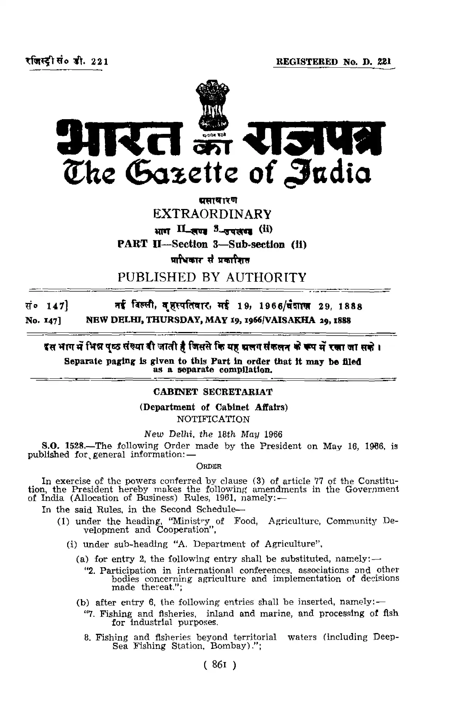
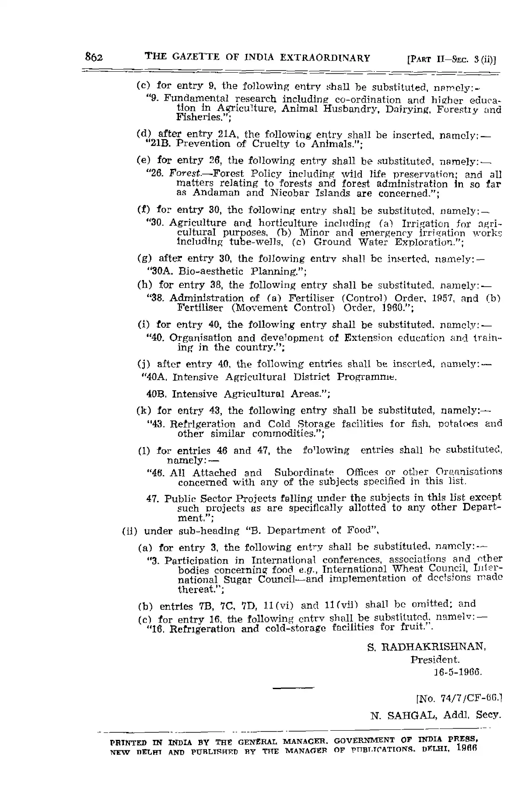

Amendment #51 (S.O. 1528, 1966)
15 changes: 0 to the First Schedule, 15 to the Second Schedule. 14 applied1 not applied
The order, page by page
Page 1 of 2

12Schedule 2 › Ministry of Food, Agriculture, Community Development and Cooperation › Department of Agriculture › entry 2
- 2. Participation in international conferences, associations and other bodies concerning agriculture and implementation of decisions made thereat.
applied at schedule 2 › ministry Ministry of Food, Agriculture, Community Development and Cooperation › department A › part I ›… in the Rules after #51
after Schedule 2 › Ministry of Food, Agriculture, Community Development and Cooperation › Department of Agriculture › entry 6
- 7. Fishing and fisheries, inland and marine, and processing of fish for Industrial purposes.
- 8. Fishing and fisheries beyond territorial waters (including Deep- Sea Fishing Station, Bombay) .
applied at schedule 2 › ministry Ministry of Food, Agriculture, Community Development and Cooperation › department A › part I ›… in the Rules after #51
Page 2 of 2

3456789101112131415Schedule 2 › Ministry of Food, Agriculture, Community Development and Cooperation › Department of Agriculture › entry 9
- 9. Fundamental research including co-ordination and higher education in Agriculture, Animal Husbandry, Dairying, Forestry and Fisheries.
applied at schedule 2 › ministry Ministry of Food, Agriculture, Community Development and Cooperation › department A › part I ›… in the Rules after #51
after Schedule 2 › Ministry of Food, Agriculture, Community Development and Cooperation › Department of Agriculture › entry 21A
- 21B. Prevention of Cruelty to Animals.
applied at schedule 2 › ministry Ministry of Food, Agriculture, Community Development and Cooperation › department A › part II ›… in the Rules after #51
Schedule 2 › Ministry of Food, Agriculture, Community Development and Cooperation › Department of Agriculture › entry 26
- 26. Forest-Forest Policy including wild life preservation; and all matters relating to forests and forest administration in so far as Andaman and Nicobar Islands are concerned.
applied at schedule 2 › ministry Ministry of Food, Agriculture, Community Development and Cooperation › department A › part III ›… in the Rules after #51
Schedule 2 › Ministry of Food, Agriculture, Community Development and Cooperation › Department of Agriculture › entry 30
- 30. Agriculture and horticulture including (a) Irrigation for agricultural purposes, (b) Minor and emergency irrigation works including tube-wells, (c) Ground Water Exploration.
applied at schedule 2 › ministry Ministry of Food, Agriculture, Community Development and Cooperation › department A › part IV ›… in the Rules after #51
after Schedule 2 › Ministry of Food, Agriculture, Community Development and Cooperation › Department of Agriculture › entry 30
- 30A. Bio-aesthetic Planning.
applied at schedule 2 › ministry Ministry of Food, Agriculture, Community Development and Cooperation › department A › part IV ›… in the Rules after #51
Schedule 2 › Ministry of Food, Agriculture, Community Development and Cooperation › Department of Agriculture › entry 38
- 38. Administration of (a) Fertiliser (Control) Order, 1957, and (b) Fertiliser (Movement Control) Order, 1960.
applied at schedule 2 › ministry Ministry of Food, Agriculture, Community Development and Cooperation › department A › part IV ›… in the Rules after #51
Schedule 2 › Ministry of Food, Agriculture, Community Development and Cooperation › Department of Agriculture › entry 40
- 40. Organisation and development of Extension education and training in the country.
applied at schedule 2 › ministry Ministry of Food, Agriculture, Community Development and Cooperation › department A › part IV ›… in the Rules after #51
after Schedule 2 › Ministry of Food, Agriculture, Community Development and Cooperation › Department of Agriculture › entry 40
- 40A. Intensive Agricultural District Programme
- 40B. Intensive Agricultural Areas.
applied at schedule 2 › ministry Ministry of Food, Agriculture, Community Development and Cooperation › department A › part IV ›… in the Rules after #51
Schedule 2 › Ministry of Food, Agriculture, Community Development and Cooperation › Department of Agriculture › entry 43
- 43. Refrigeration and Cold Storage facilities for fish, potatoes and other similar commodities.
applied at schedule 2 › ministry Ministry of Food, Agriculture, Community Development and Cooperation › department A › part IV ›… in the Rules after #51
Schedule 2 › Ministry of Food, Agriculture, Community Development and Cooperation › Department of Agriculture › entry 46; Schedule 2 › Ministry of Food, Agriculture, Community Development and Cooperation › Department of Agriculture › entry 47
- 46. All Attached and Subordinate Offices or other Organisations concerned with any of the subjects specified in this list.
- 47. Public Sector Projects falling under the subjects in this list except such projects as are specifically allotted to any other Department.
applied at schedule 2 › ministry Ministry of Food, Agriculture, Community Development and Cooperation › department A › part IV ›… in the Rules after #51
Schedule 2 › Ministry of Food, Agriculture, Community Development and Cooperation › Department of Food › entry 3
- 3. Participation in International conferences, associations and other bodies concerning food e.g., International Wheat Council, International Sugar Council-and implementation of decisions made thereat.
applied at schedule 2 › ministry Ministry of Food, Agriculture, Community Development and Cooperation › department B ›… in the Rules after #51
Schedule 2 › Ministry of Food, Agriculture, Community Development and Cooperation › Department of Food › entry 7B; Schedule 2 › Ministry of Food, Agriculture, Community Development and Cooperation › Department of Food › entry 7C; Schedule 2 › Ministry of Food, Agriculture, Community Development and Cooperation › Department of Food › entry 7D; Schedule 2 › Ministry of Food, Agriculture, Community Development and Cooperation › Department of Food › entry 11 › item vi; Schedule 2 › Ministry of Food, Agriculture, Community Development and Cooperation › Department of Food › entry 11 › item vii
not applied (the change could not be placed in the Rules as read; see How this document was read)
Schedule 2 › Ministry of Food, Agriculture, Community Development and Cooperation › Department of Food › entry 16
- 16. Refrigeration and cold-storage facilities for fruit.
applied at schedule 2 › ministry Ministry of Food, Agriculture, Community Development and Cooperation › department B ›… in the Rules after #51
How this document was read
Known issues
| Change | Issue | Known as |
|---|---|---|
| 14 | change 14: no entry 7B under schedule 2 › ministry Ministry of Food, Agriculture, Community Development and Cooperation › department B | Entries not in the state |
From the Government of India (Allocation of Business) Rules, 1961 and their amendments, as published by the Cabinet Secretariat (cabsec.gov.in), read by orgpedia. The readings of the older scanned gazettes have known gaps.